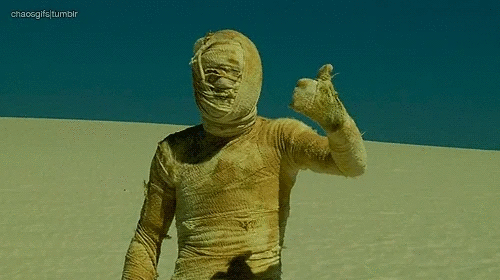

CoSaS En El Cairo (CSS En El Cairo) es una empresa fictícia de actividades en la ciudad del Cairo creada por Sergi Ruiz para la asignatura de Sistemas de Información Basados en Web, con el objetivo de promover el turismo de tan maravillosa ciudad, la cual alberga un sinfín de aventuras y lugares por descubrir.
Horario (de la asignatura):
Disfruta de El Cairo y sobretodo... CUIDADO CON LAS MOMIAS!
 {% endblock %}